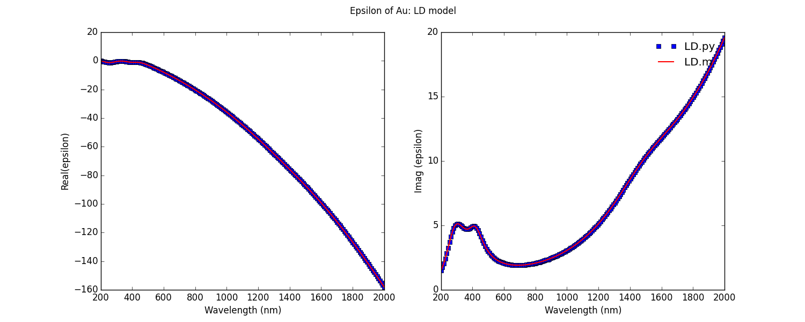

Generating plasmonic metal dielectric functions in Python
Posted on Thu 10 September 2015 in Plasmonics
I keep needing a python code to generate the dielectric functions of plasmonic materials such as Au, Ag, Pd, and Pt. So I wrote a python version of LD.m.
LD.m is a matlab file written by Bora Ung that produces dielectric functions of metals either for Lortenz and Loretnz drude models.
The dielectric functions are given as follows:
\(\epsilon(\omega)=1-\frac{f_1\omega_p'^2}{(\omega^2+i\Gamma_1'\omega)}+\sum_{j=2}^{n}\frac{f_j\omega_p'^2}{(\omega_{o,j}'^2-\omega^2-i\Gamma_j'\omega)}\).
The first part of the function is the Drude part and the second part is the Lorentz part. The parameters for these models are taken from Rakic et al., Optical properties of metallic films for vertical-cavity optoelectronic devices, Applied Optics (1998).
A typical example on how to use this modules is shown below:
1 2 3 4 5 6 7 8 9 10 11 12 13 14 15 16 17 18 19 20 21 22 23 24 25 26 27 28 29 30 | |
This is graph comparing the Au eps data obtained using LD.m and LD.python. The are exactly the same.
